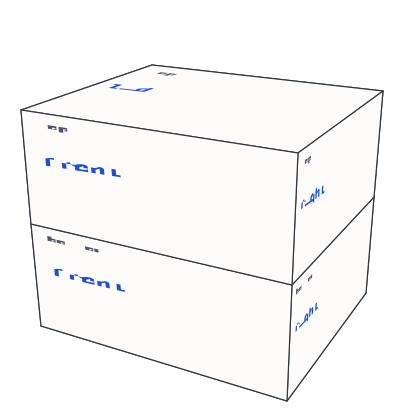
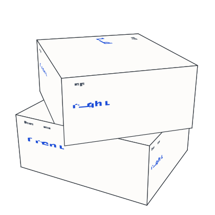
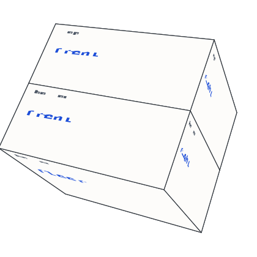

The Rosetta stone
idioms compared on an impossible object: the geometry, the three carousels, the attract traversal
Table of Contents
The Rosetta stone (demos/rosetta/, design in docs/rosetta.md) shows
how array languages write the same idiom: a box whose whole body rolls
through the idioms while its top half turns through the languages and
its bottom half turns, on its own, through the languages compared
with. No solid turns like this, and none needs to: the picture is
drawn fresh for every frame by an X_eTaL program, and the web page
around it only carries drags, keys and ticks in and SVG out. This
document builds the stone up from its two libraries, Stone.xtl (the
geometry) and Comparison.xtl (the state machine), with pictures the
libraries draw. Every block below is run by xetal and its result
recorded under it.
The libraries live beside the demo, so a program elsewhere names their
directory on XETAL_PATH (demos/rosetta); this document does.
1. A box, viewed and projected
Geometry3D gives points as a matrix of three rows (x, y, z), turns
them about an axis and projects them for a viewer on the z axis;
Svg writes the picture. Stone builds on both: st:r_ing is one
half of the stone as a closed box of six faces, each face its four
corners (3 x 4), as an array of faces (6 x 3 x 4); the first argument
says which half (1 the top, -1 the bottom), the second is a pair, the
half's own turn about y and the whole stone's roll about x, both in
degrees.
ˢᵗ⁼u̲se< "Stone" ᵛ⁼u̲se< "Svg" ᵍ⁼u̲se< "Geometry3D" s̲hape 1 ˢᵗr̲ing 0.0 0.0 s̲hape (1 ˢᵗr̲ing 0.0 0.0) c̲at -1 ˢᵗr̲ing 0.0 0.0 ⍝ typed: ⍝ "st:" u_se< "Stone" ⍝ "v:" u_se< "Svg" ⍝ "g:" u_se< "Geometry3D" ⍝ s_hape 1 st:r_ing 0.0 0.0 ⍝ s_hape (1 st:r_ing 0.0 0.0) c_at -1 st:r_ing 0.0 0.0
6 3 4 12 3 4
The faces come in the view's frame already (the stone is seen a little
from above and from the left), so a face's picture coordinates are one
projection away: st:s_creen puts a face's corners in the 420 by 420
picture. The front face of the top half at rest:
f̲loor 0.5 + ˢᵗs̲creen 1 s̲elect 1 ˢᵗr̲ing 0.0 0.0 ⍝ typed: ⍝ f_loor 0.5 + st:s_creen 1 s_elect 1 st:r_ing 0.0 0.0
21 298 292 31 110 153 285 224
2. Faces as panels
A face is drawn by st:p_anel: its corners filled and outlined, and
lines of markup laid on it in face coordinates (0 to 1 across and
down), the first line a small title, the rest code. The lines are
boxed texts: Svg's v:s_pan colors a run, v:e_scape makes plain
text safe. Faces are painted far to near (st:p_ainting orders them
by depth), so nearer faces cover farther ones, which is all the hidden
surface removal a convex box needs. Here is a stone at rest with a
label on each face: the top half's four sides, its lid and floor, then
the bottom half's.
ᵘf̲ace ← { title code → (e̲nclose "#fdfcfa") c̲at (e̲nclose ᵛe̲scape title) c̲at e̲nclose "#1d4ed8" ᵛs̲pan code } names ← (e̲nclose "front") c̲at (e̲nclose "right") c̲at (e̲nclose "back") c̲at (e̲nclose "left") c̲at (e̲nclose "lid") c̲at e̲nclose "floor" ᵘo̲ne ← { k halves → half ← "k <= 6" i̲f< "\"top\"; \"bottom\"" side ← d̲isclose (1 + (k − 1) m̲od 6) s̲elect names (half ᵘf̲ace side) ˢᵗp̲anel k s̲elect halves } ᵘp̲anels ← { halves → d̲isclose '{ x y → e̲nclose (d̲isclose x) c̲at d̲isclose y } r̲/ '{ k → k ᵘo̲ne halves } m̲ap ˢᵗp̲ainting halves } ᵘp̲icture ← { halves → (ˢᵗsize c̲at ˢᵗsize) ᵛp̲icture ᵘp̲anels halves } rest ← (1 ˢᵗr̲ing 0.0 0.0) c̲at -1 ˢᵗr̲ing 0.0 0.0 t̲ally ᵘp̲icture rest ⍝ typed: ⍝ u:f_ace := { title code -> (e_nclose "#fdfcfa") c_at (e_nclose v:e_scape title) c_at e_nclose "#1d4ed8" v:s_pan code } ⍝ names := (e_nclose "front") c_at (e_nclose "right") c_at (e_nclose "back") c_at (e_nclose "left") c_at (e_nclose "lid") c_at e_nclose "floor" ⍝ u:o_ne := { k halves -> ⍝ half := "k <= 6" i_f< "\"top\"; \"bottom\"" ⍝ side := d_isclose (1 + (k - 1) m_od 6) s_elect names ⍝ (half u:f_ace side) st:p_anel k s_elect halves ⍝ } ⍝ u:p_anels := { halves -> d_isclose '{ x y -> e_nclose (d_isclose x) c_at d_isclose y } r_/ '{ k -> k u:o_ne halves } m_ap st:p_ainting halves } ⍝ u:p_icture := { halves -> (st:size c_at st:size) v:p_icture u:p_anels halves } ⍝ rest := (1 st:r_ing 0.0 0.0) c_at -1 st:r_ing 0.0 0.0 ⍝ t_ally u:p_icture rest
4094
shown ← ⎕S̲HOW ᵘp̲icture rest ⍝ typed: ⍝ shown := []S_HOW u:p_icture rest

Three faces show: the front, the right side and the lid (the view is turned 22 degrees down and 28 degrees round). The lid is the top half's; the bottom half's lid and the top half's floor meet in the middle and are hidden, which is why each half can be a closed box without a seam showing.
3. The three carousels
Each half turns about y on its own; the whole stone rolls about x. Turning the top half by 45 degrees brings its right side round to the front and leaves the bottom half where it was: this is the impossible part, two halves of one box turning separately.
turned ← (1 ˢᵗr̲ing 45.0 0.0) c̲at -1 ˢᵗr̲ing 0.0 0.0 shown ← ⎕S̲HOW ᵘp̲icture turned ⍝ typed: ⍝ turned := (1 st:r_ing 45.0 0.0) c_at -1 st:r_ing 0.0 0.0 ⍝ shown := []S_HOW u:p_icture turned

Rolling the stone by 45 degrees (both halves given the same roll) brings the bottom half's floor up toward the front: the next idiom comes up from below.
rolled ← (1 ˢᵗr̲ing 0.0 45.0) c̲at -1 ˢᵗr̲ing 0.0 45.0 shown ← ⎕S̲HOW ᵘp̲icture rolled ⍝ typed: ⍝ rolled := (1 st:r_ing 0.0 45.0) c_at -1 st:r_ing 0.0 45.0 ⍝ shown := []S_HOW u:p_icture rolled

The quarter turn
An axis advanced by a degrees (90 per item) is not drawn turned by a:
it is drawn turned by only the part of a quarter turn under way, and
its sides show the items counted from the one the turn started at.
st:p_art and st:b_ase split an angle so: a turn ends with the
same picture it would have begun from, the sides relabel only at that
instant, and the geometry never leaves its rest position by more than
a quarter turn, so the halves always stand upright where they can
turn.
angles ← 0.0 30.0 89.0 90.0 135.0 180.0 -45.0 'ˢᵗp̲art e̲ach angles 'ˢᵗb̲ase e̲ach angles ⍝ typed: ⍝ angles := 0.0 30.0 89.0 90.0 135.0 180.0 -45.0 ⍝ 'st:p_art e_ach angles ⍝ 'st:b_ase e_ach angles
0.0 30.0 89.0 0.0 45.0 0.0 45.0 0 0 0 1 1 2 -1
4. The state machine
Comparison keeps the whole stone as one 5 x 5 matrix of numbers.
The first three rows are the axes (the idiom roll, the top half, the
bottom half): how many items the axis has, how many steps it has taken
(an integer; the item facing is 1 + steps, wrapped, and this is the
truth), its angle in degrees (the presentation, easing toward 90 times
the steps), and whether it plays on its own. The fourth row is the
pointer, the fifth the attract mode's clock. Nothing is ever inferred
from an angle except what to draw.
ᶜᵐ⁼u̲se< "Comparison" s0 ← 31 ᶜᵐs̲tart 7 s0 ⍝ typed: ⍝ "cm:" u_se< "Comparison" ⍝ s0 := 31 cm:s_tart 7 ⍝ s0
31.0 0.0 0.0 1.0 0.0 7.0 0.0 0.0 1.0 0.0 7.0 0.0 0.0 1.0 0.0 0.0 0.0 0.0 0.0 0.0 8.0 0.0 0.0 0.0 0.0
Choosing an item turns its axis the short way round and pauses it; the steps change at once, the angle follows over the next ticks. A tick carries the seconds since the last one and eases every moving angle toward its target, landing exactly when near.
chosen ← (ᶜᵐTOP c̲at 7.0) ᶜᵐc̲hoose s0 ᶜᵐTOP ᶜᵐc̲urrent chosen (ᶜᵐTOP c̲at ᶜᵐSTEPS) ᶜᵐa̲t chosen (ᶜᵐTOP c̲at ᶜᵐANGLE) ᶜᵐa̲t chosen (ᶜᵐTOP c̲at ᶜᵐANGLE) ᶜᵐa̲t 0.1 ᶜᵐt̲ick chosen (ᶜᵐTOP c̲at ᶜᵐANGLE) ᶜᵐa̲t 0.1 ᶜᵐt̲ick 0.1 ᶜᵐt̲ick chosen (ᶜᵐTOP c̲at ᶜᵐANGLE) ᶜᵐa̲t ᶜᵐs̲ettle chosen ⍝ typed: ⍝ chosen := (cm:TOP c_at 7.0) cm:c_hoose s0 ⍝ cm:TOP cm:c_urrent chosen ⍝ (cm:TOP c_at cm:STEPS) cm:a_t chosen ⍝ (cm:TOP c_at cm:ANGLE) cm:a_t chosen ⍝ (cm:TOP c_at cm:ANGLE) cm:a_t 0.1 cm:t_ick chosen ⍝ (cm:TOP c_at cm:ANGLE) cm:a_t 0.1 cm:t_ick 0.1 cm:t_ick chosen ⍝ (cm:TOP c_at cm:ANGLE) cm:a_t cm:s_ettle chosen
7 -1.0 0.0 -18.0 -32.4 -90.0
Item 7 of 7 is one step back from item 1, so the top half turned -1
step, not 6 forward; the angle eases from 0 toward -90 and cm:s_ettle
finishes every move at once (the page does that when the viewer
prefers reduced motion).
The two halves always compare two different languages: a step on a half never lands on the language the other half shows (stepping onto it steps past it), and choosing that language is refused (the page offers it disabled).
stepped ← (ᶜᵐBOTTOM c̲at 1.0) ᶜᵐs̲tep (ᶜᵐTOP c̲at 2.0) ᶜᵐc̲hoose s0 ᶜᵐBOTTOM ᶜᵐc̲urrent stepped ᶜᵐBOTTOM ᶜᵐc̲urrent (ᶜᵐBOTTOM c̲at 2.0) ᶜᵐc̲hoose stepped ⍝ typed: ⍝ stepped := (cm:BOTTOM c_at 1.0) cm:s_tep (cm:TOP c_at 2.0) cm:c_hoose s0 ⍝ cm:BOTTOM cm:c_urrent stepped ⍝ cm:BOTTOM cm:c_urrent (cm:BOTTOM c_at 2.0) cm:c_hoose stepped
3 3
5. The attract traversal
Left alone, the stone tours the comparisons as the nested loop for idiom, for top, for bottom: every dwell (three seconds) the bottom half steps; when it has swept every other language the top half steps too, in the same instant; and when the top has swept, the whole stone rolls as well, three turns at once, the tumble. Any touch pauses the tour for eight seconds. Ticking a fresh state (its idle wait already over) by three seconds at a time and watching which items face:
ᵘf̲acing ← { s → (ᶜᵐIDIOM ᶜᵐc̲urrent s) c̲at (ᶜᵐTOP ᶜᵐc̲urrent s) c̲at ᶜᵐBOTTOM ᶜᵐc̲urrent s } ᵘd̲well ← { s → 3.0 ᶜᵐt̲ick s } ᵘt̲our ← { n → ᵘf̲acing ᶜᵐs̲ettle n 'ᵘd̲well p̲ower ᶜᵐr̲esume s0 } 8 3 r̲eshape d̲isclose '{ x y → e̲nclose (d̲isclose x) c̲at d̲isclose y } r̲/ 'ᵘt̲our m̲ap r̲ange 8 ⍝ typed: ⍝ u:f_acing := { s -> (cm:IDIOM cm:c_urrent s) c_at (cm:TOP cm:c_urrent s) c_at cm:BOTTOM cm:c_urrent s } ⍝ u:d_well := { s -> 3.0 cm:t_ick s } ⍝ u:t_our := { n -> u:f_acing cm:s_ettle n 'u:d_well p_ower cm:r_esume s0 } ⍝ 8 3 r_eshape d_isclose '{ x y -> e_nclose (d_isclose x) c_at d_isclose y } r_/ 'u:t_our m_ap r_ange 8
1 1 2 1 1 3 1 1 4 1 1 5 1 1 6 1 2 7 1 2 1 1 2 3
Each row is idiom, top, bottom. The bottom half walks 2, 3, 4, 5, 6; when it has swept, the top steps to 2 in the same instant and the bottom goes on round, 7, 1, 3, never landing on 2 while the top shows it. After the top's own sweep the stone rolls to the next idiom too.
6. The program and the page
demos/rosetta/rosetta.xtl is the loop: an event from []E_VENT
(a tick, a key, the pointer, a choice from the page's lists), the state
after it through cm:u_pdate, and on each tick a frame: the two
halves from st:r_ing at the state's angles, a face for each side
from the data (demos/rosetta/data.toml, read as aligned arrays with
[]L_IST and []T_ABLE), X_eTaL cells colored by the language's own
view model ([]V_IEW) and the other languages by their spans or a
guess from their characters, the lid and the floor naming the idioms
before and after. Whenever the stone moves it prints where it stands,
at IDIOM TOP BOTTOM, and the page reads that line for its lists and
the address bar. The same program runs from the command line with
scripted events (xetal run --events FILE), which is how its
transitions are tested, and on the page, where a Rust worker runs it
and the page sends events in; the page knows no geometry, traversal or
language. The web page is at softwarewrighter.github.io/X_eTaL/rosetta/.